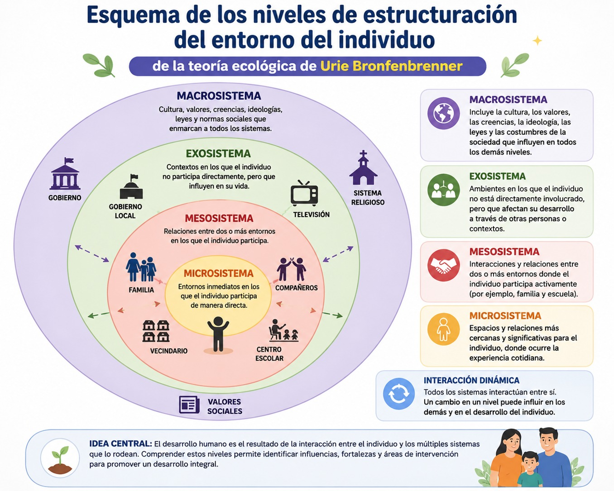

El estudio del desarrollo humano ha ocupado un lugar central en las ciencias sociales y psicológicas a lo largo del siglo XX. Diversas corrientes teóricas intentaron explicar cómo los individuos construyen su personalidad, desarrollan habilidades cognitivas y se integran a la vida social. Sin embargo, muchas de estas perspectivas privilegiaron dimensiones individuales o biológicas, dejando en segundo plano la influencia de los contextos sociales y culturales. En este escenario, la teoría ecológica del desarrollo humano formulada por Urie Bronfenbrenner representó un cambio paradigmático al proponer que el desarrollo de las personas sólo puede comprenderse mediante el análisis de las interacciones entre el individuo y los múltiples ambientes en los que participa.
La teoría ecológica surge en la década de 1970 como una crítica a los modelos experimentales tradicionales de la psicología del desarrollo, los cuales analizaban el comportamiento humano en entornos artificiales y descontextualizados. Bronfenbrenner argumentó que el desarrollo humano es un proceso dinámico influido por redes complejas de relaciones sociales, culturales, económicas e históricas. Desde esta perspectiva, el individuo no es un sujeto aislado, sino un ser inmerso en sistemas interdependientes que condicionan sus oportunidades, experiencias y formas de interacción.
El principal aporte de esta teoría consiste en comprender el desarrollo humano como resultado de una interacción constante entre factores personales y ambientales. Bronfenbrenner propuso que los contextos sociales se organizan en distintos niveles ecológicos que se relacionan entre sí y ejercen influencia sobre la vida de las personas. Esta visión permitió superar explicaciones reduccionistas y abrió nuevas posibilidades para el análisis interdisciplinario de fenómenos educativos, familiares y comunitarios.
Niveles de estructuración del entorno del individuo.
La teoría ecológica de Bronfenbrenner plantea que el entorno está compuesto por estructuras concéntricas organizadas en distintos sistemas. El primero de ellos es el microsistema, entendido como el espacio inmediato donde el individuo interactúa cotidianamente. La familia, la escuela, el grupo de amigos y la comunidad cercana constituyen ejemplos de este nivel. En el microsistema se desarrollan relaciones directas que influyen profundamente en la construcción de la identidad, las emociones y los aprendizajes.
El segundo nivel es el mesosistema, que hace referencia a las interrelaciones entre los diferentes microsistemas. Por ejemplo, la relación entre familia y escuela puede favorecer o dificultar el desarrollo de niñas, niños y adolescentes. Bronfenbrenner enfatiza que no basta con analizar los contextos de manera aislada; es necesario comprender cómo interactúan entre sí y cómo estas conexiones fortalecen o debilitan los procesos de desarrollo.
Posteriormente se encuentra el exosistema, conformado por espacios en los cuales la persona no participa directamente, pero que afectan su vida cotidiana. Las condiciones laborales de los padres, las políticas institucionales o los medios de comunicación son ejemplos de este nivel. Aunque el individuo no intervenga activamente en dichos contextos, sus efectos repercuten en su bienestar y en sus oportunidades de desarrollo.
El nivel más amplio corresponde al macrosistema, integrado por valores culturales, normas sociales, ideologías, estructuras económicas y sistemas políticos que organizan la vida social. Este sistema refleja las creencias y modelos dominantes de una sociedad, influyendo en la manera en que se construyen las relaciones familiares, educativas y comunitarias. Desde esta perspectiva, el desarrollo humano está profundamente vinculado con procesos históricos y culturales.
Años más tarde, Bronfenbrenner incorporó el concepto de cronosistema, referido a la dimensión temporal del desarrollo. Este sistema reconoce que las personas y los contextos cambian a lo largo del tiempo, y que acontecimientos históricos, transformaciones sociales o experiencias vitales influyen en las trayectorias individuales. De esta manera, el desarrollo humano se entiende como un proceso histórico y dinámico. En el siguiente diagrama puedes ver los distintos niveles sistémicos de estructuración del entorno del individuo:

La relevancia de la teoría ecológica radica en su capacidad para integrar dimensiones psicológicas y sociales en un mismo modelo analítico. Esta perspectiva permitió comprender que problemáticas como el fracaso escolar, la violencia, la exclusión social o las desigualdades no pueden explicarse únicamente desde características individuales, sino a partir de la interacción compleja entre sujetos y contextos.
Asimismo, la teoría ecológica ha tenido una gran influencia en campos como la sociología, la pedagogía, el trabajo social y las políticas públicas. Su enfoque ha contribuido a diseñar estrategias educativas y comunitarias orientadas a fortalecer redes de apoyo, promover ambientes saludables y reconocer la importancia de la participación familiar y social en los procesos formativos.
En suma, la teoría ecológica de Urie Bronfenbrenner constituye una de las propuestas más influyentes para comprender el desarrollo humano desde una perspectiva integral y relacional. Al reconocer la interacción entre individuo y contexto, esta teoría supera visiones reduccionistas y permite analizar la complejidad de los procesos sociales, educativos y familiares. Este modelo es muy importante ya que demuestra que el desarrollo humano no depende exclusivamente de capacidades individuales, sino de las condiciones sociales, culturales e históricas en las que las personas construyen su vida cotidiana. La familia, la escuela, las instituciones, las políticas públicas y la cultura forman parte de un entramado dinámico que influye constantemente en las trayectorias humanas.
En un contexto contemporáneo marcado por desigualdades sociales, transformaciones tecnológicas y crisis comunitarias, la teoría ecológica mantiene una gran vigencia. Su enfoque interdisciplinario ofrece herramientas fundamentales para comprender los desafíos actuales y para diseñar estrategias orientadas a la construcción de entornos más inclusivos, equitativos y favorables para el desarrollo humano.
- Bronfenbrenner, Urie (1987). La ecología del desarrollo humano. Experimentos en entornos naturales y diseñados. Barcelona, Buenos Aires, México: Paidós.